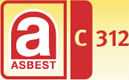
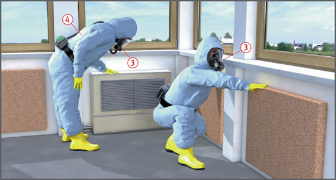
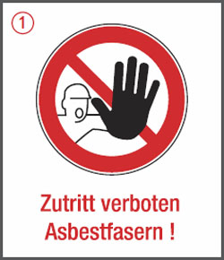
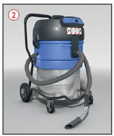

Schwach gebundene Asbestprodukte
Asbestprodukte mit hohem Faserfreisetzungspotential
|
 |

Gefährdungen
- Asbestfasern können bis in die Alveolen der Lunge eingeatmet werden und eine Asbestose, Lungenkrebs oder ein Pleuramesotheliom (Tumor des Bauch- und Rippenfells) auslösen.
Allgemeines
- Von schwach gebundenen Asbestprodukten können auch in eingebautem Zustand Gesundheitsgefahren ausgehen, z. B. bei Beschädigung der Oberfläche. Allein durch Luftzirkulation können erhebliche Fasermengen freigesetzt und dadurch auch benachbarte Räume kontaminiert werden.
Schutzmaßnahmen
Technische und organisatorische Schutzmaßnahmen
- Tätigkeiten mit Asbest sind der Aufsichtsbehörde und der Berufsgenossenschaft schriftlich anzuzeigen.
- Gefährdungsbeurteilung mit Arbeitsplan aufstellen und zusammen mit der Mitteilung der zuständigen Behörde (z. B. Gewerbeaufsichtsamt) vorlegen.
- Angaben z. B. über:
- Art und Dauer der Arbeiten,
- Arbeitsablauf und vorgesehene technische Schutzmaßnahmen,
- persönliche Schutzausrüstungen,
- Dekontamination der Beschäftigten,
- Abfallbehandlung und Entsorgung.
- Betriebsanweisung aufstellen mit Angaben z. B. über:
- Arbeitsbereiche, Arbeitsplatz, Tätigkeit,
- Gefahren für Mensch und Umwelt,
- Schutzmaßnahmen, Verhaltensregeln und hygienische Maßnahmen,
- Verhalten im Gefahrfall,
- Erste Hilfe,
- sachgerechte Entsorgung.
- Beschäftigte anhand der Betriebsanweisung unterweisen.
- Arbeiten mit anderen Gewerken koordinieren, um zu vermeiden, dass Unbeteiligte gefährdet werden.
- Arbeitsbereiche abgrenzen und mit Warnschildern kennzeichnen
 .
.

- Die Arbeiten sind unter Leitung eines sachkundigen Aufsichtsführenden auszuführen. Dieser muss während der Arbeiten ständig anwesend sein.
- Arbeitsbereiche staubdicht abschotten. Abgeschottete Bereiche unter Unterdruck halten.
- Arbeitsbereiche nur über Personenschleusen mit ausreichender Be- und Entlüftung sowie kontrollierter Unterdruckhaltung betreten bzw. verlassen.
- Abzubrechendes Asbest oder asbesthaltige Materialien vor dem Abtragen mit Wasser weitgehend durchfeuchten. Gegebenenfalls mehrmals wiederholen.
- Freiwerdende Fasern direkt am Entstehungsort absaugen.
- Ausgebaute und verpackte Asbestprodukte nur über Materialschleuse aus dem Arbeitsbereich heraustransportieren.
- Asbestmaterial nicht schreddern oder anders mechanisch zerkleinern.
- Ausgebauten Spritzasbest mit Zement oder anderen hydraulischen Bindemitteln in einem geschlossenen Aufbereitungssystem verfestigen.
- Verbleibende Asbestfaserrückstände auf rauen Bauteiloberflächen durch Restfaserbindemittel, Anstrich oder aufgesprühte Beschichtung binden.
- Arbeitsbereiche nach Beendigung der Arbeiten reinigen. Die End- bzw. Feinreinigung erst durchführen, wenn sich der Reststaub in der Luft abgelagert hat, frühestens jedoch nach 12 Stunden.
- Personen- und Materialschleusen nach Schichtende feucht reinigen.
- Für Reinigungs- und andere Arbeiten mit Absaugung asbesthaltiger Materialien nur Industriestaubsauger oder Entstauber der Staubklasse H mit Zusatzanforderung "Asbest" verwenden
 .
.

- Asbest- oder asbesthaltige Abfälle sowie verbrauchte Arbeitsmittel wie auch Schutzkleidung in gekennzeichneten Behältern sammeln.
- Abfälle auf zugelassenen Deponien so einlagern und abdecken, dass keine Asbestfasern in die Umwelt gelangen.
- Bei der Deponie Erkundigungen über weiter gehende Forderungen einholen.
Persönliche und hygienische Schutzmaßnahmen
- Bei sämtlichen Tätigkeiten, einschließlich der Endreinigung, und bei der Abfallbeseitigung Atemschutzgeräte
 benutzen.
benutzen.
Bei Faserkonzentrationen bis 10.000 F/m3 (Tätigkeiten geringer Exposition):
- P2-Filtergeräte bei Tätigkeiten mit Expositionsspitzen.
Bei Faserkonzentrationen von 10.000 F/m3 bis 100.000 F/m3:
- partikelfiltrierende Halbmasken FFP2 für kurzzeitige Tätigkeiten von maximal zwei Stunden pro Schicht,
- Halbmasken mit P2-Filter für länger andauernde Tätigkeiten,
- Maske mit Gebläse und Partikelfilter TM1P.
Bei Faserkonzentrationen von 100.000 F/m3 bis 300.000 F/m3
- partikelfiltrierende Halbmasken FFP3 für kurzzeitige Tätigkeiten von maximal zwei Stunden pro Schicht,
- Halbmasken mit P3-Filter für länger andauernde Tätigkeiten,
- Maske mit Gebläse und Partikelfilter TM2P (empfohlen).
Bei Faserkonzentrationen über 300.000 F/m3:
- Vollmasken mit Gebläse und Partikelfilter TM3P.
Bei Faserkonzentrationen über 4.000.000 F/m3:
- Mindestens CSK EG.-Kat III, Typ 5 – 6 verwenden, bei hoher Exposition oder Auftreten von Sprühnebel oder Feuchtigkeit Typ 4
 .
.
- Schutzanzüge nur innerhalb der Personenschleuse ausziehen. Zuvor anhaftenden Staub durch Abwaschen oder Absaugen vollständig entfernen. Dabei Atemschutz nicht ablegen.
- In Arbeitsbereichen nicht essen, trinken oder rauchen.
Prüfungen
- "Verantwortliche Person im Betrieb" (VP) und "Aufsichtführende Person vor Ort" (AF):
- Sachkunde n. TRGS 519 Anlage 3.
Ausnahmen für AF:
- bei Arbeiten geringen Umfangs nach TRGS 519, Nr. 2.10: Sachkunde mind. nach Anlage 4 b, empfohlen Anlage 4c,
- bei Anwendung anerkannter emissionsarmer Verfahren n. TRGS 519 Nr. 2.9 alternativ zur Sachkunde: Qualifikation "Q1E" nach TRGS 519 Anlage 10.
Arbeitsmedizinische Vorsorge
- Arbeitsmedizinische Vorsorge nach Ergebnis der Gefährdungsbeurteilung veranlassen (Pflichtvorsorge) oder anbieten (Angebotsvorsorge). Hierzu Beratung durch den Betriebsarzt.
Beschäftigungsbeschränkungen
- Bei Tätigkeiten mit schwach gebundenem Asbest dürfen werdende Mütter nicht und Jugendliche nur unter folgenden Bedingungen beschäftigt werden:
- die Tätigkeit ist zur Erreichung ihres Ausbildungszieles erforderlich,
- sie findet unter Aufsicht eines Fachkundigen statt, und
- die Toleranzkonzentration für Asbest wird unterschritten.
07/2021